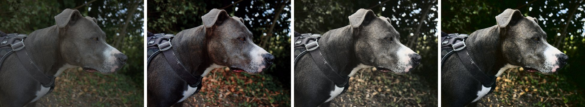
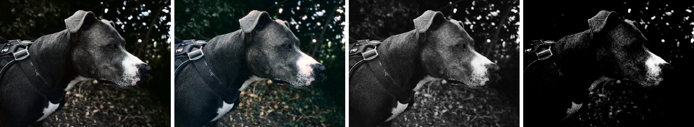
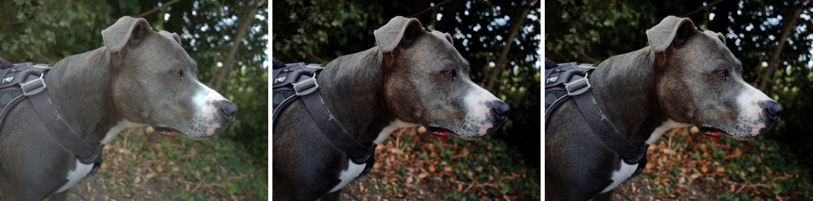
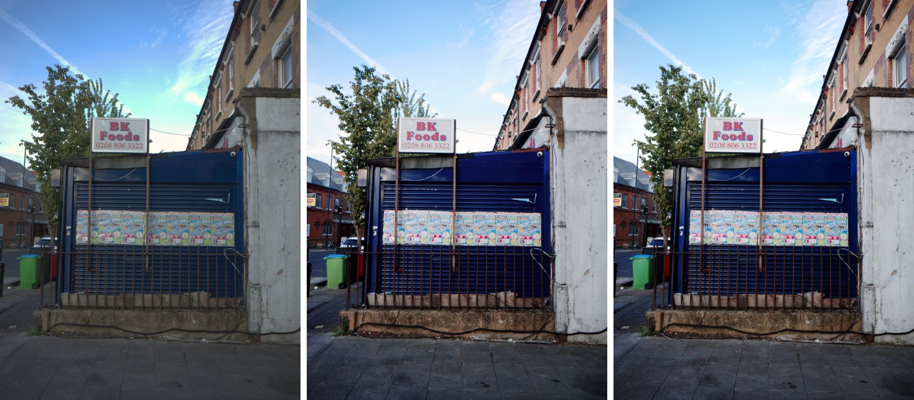
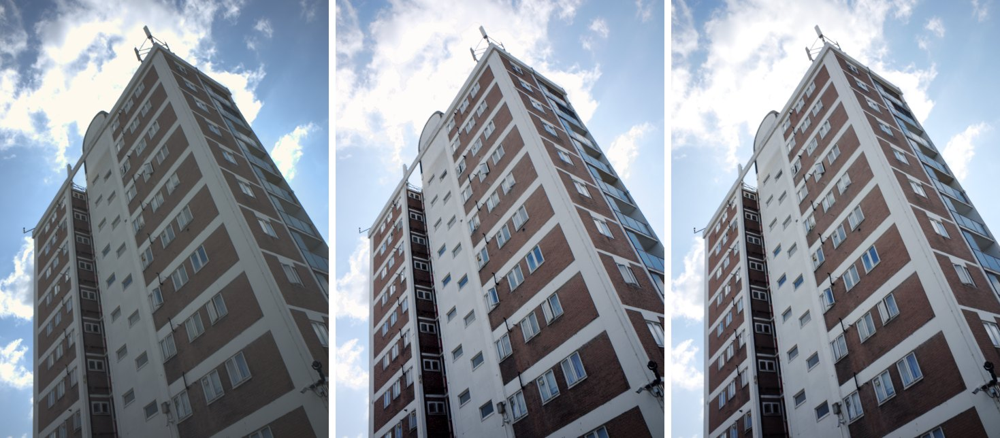

Positive Film
The Ricoh GR's Positive Film look and six film looks, for your RAW and JPEG files. Nothing leaves your device.
RAW or JPEG · one, a few, or a whole folder
Works offline once visited.
Size and quality
All photos
Notes on RAW, JPEG and batches
RAW files give the accurate result: Positive Film was measured from raw colour. A JPEG has already been through its own camera's curve, so the tool first estimates the light in the scene and then applies the look; treat JPEG results as an approximation. Supported RAW: DNG, RW2, NEF, CR2, CR3, ARW, ORF, RAF, PEF and more.
The look and settings apply to every photo you add; check a few before saving them all. Large batches at full resolution can take a while and use a lot of memory; 2048 px is quick. Downloads carry a short note in their file details saying they were made with this tool, with a link back here.
The looks and the grain
Positive Film is measured. The other six are built by eye from published descriptions of each film and the most-used film recipes, then tuned on the same six test frames. Each one is a short list of readable numbers (tone curve, colour moves, grain, softness, edges), in looks.js.
Grain
Grain is set by ISO, and each film only offers the speeds it is really shot at: its box speed, pulled or pushed. The digital looks start at the ISO your photo was shot at (read from the file). Either way it only adds what the photo is missing: noise already in it is taken off first, so you never get grain on top of grain.
- Film looks treat the picture as one 35 mm frame. Grain is calibrated to Kodak's published RMS granularity (Tri-X 400: 17; colour films from Kodak's Print Grain Index), then printed through paper contrast, as a real print or scan would be. Black and white is hard, neutral silver; colour is three softer dye layers.
- Per pixel, by tone. Each pixel's value sets how many grains cover it (the Boolean grain model of Newson, Delon and Galerne), so grain peaks in the mid-tones and fades into clean whites and solid blacks.
- Size. Grain lives on the film, not the pixels: a big export shows it finely, a small one averages it (Selwyn's law), and the character stays the same relative to the frame. Higher ISO means bigger, stronger grain; pushing a film gets grittier.
- Digital looks (Positive Film, Classic Chrome) use sensor noise instead: photon shot noise plus read noise, worked out from the camera's sensor size, the pixel count and the ISO.
The maths is in grain.js.


| Look | What it does | In the spirit of |
|---|---|---|
| Positive Film | Measured from an original Ricoh GR. Greens pulled back, reds and blues kept, crushed blacks. | Ricoh GR (2013) |
| Portra 400 | Gentle contrast, open shadows, warm mid-tones, olive greens, softer skies. Fine grain. | Kodak Portra 400 |
| One Hour Photo | A '90s high-street minilab print: deep blacks, hard contrast, strong reds, yellows and greens, warm creamy mid-tones, slightly soft with darker corners. | Kodak Gold, Fujicolor Superia |
| Classic Chrome | Firm shadows, colour turned down, deep reds, cyan skies, olive greens. Digital sensor noise, only above the ISO you shot at. | Fujifilm Classic Chrome |
| 800T | Teal shadows, warm highlights and a red glow around bright lights. Best on night shots under street lights. | CineStill 800T |
| Tri-X | Full tonal range, firm mid-tones, visible grain, gentle edge darkening. | Kodak Tri-X 400 |
| Shinjuku | Pushed film printed on hard paper: blacks crushed, whites blown, heavy grain, dark edges. Use the strength slider to calm it down. | After Daido Moriyama's Tokyo street work |
Film and camera names (Portra, Gold, Tri-X, Classic Chrome, Fujicolor, CineStill 800T, Positive Film) belong to their owners: Kodak, Fujifilm, CineStill and Ricoh. They are used only to say which style each look is modelled on. None of these companies made, measured or endorses these looks, and Positive Film is an independent measurement. Shinjuku is a homage to the look of Daido Moriyama's photographs; it is not connected to him or his foundation.
What Positive Film does
It is less about adding colour than taking it away from the right places. Compared with a neutral render of the same RAW file, it:
- pulls greens back by about half
- turns yellow towards ochre and warms orange towards red
- keeps reds and blues at full strength
- crushes the blacks, keeps the mid-tones bright and clips hard about two and a half stops over mid grey
- leaves a faint magenta-blue tint in the greys
Most of the look is one contrast curve applied to the red, green and blue channels separately. Because each channel goes through the curve on its own, the curve also adds saturation in the shadows and takes it out of the highlights. The colour shifts in the second table do the rest.
The numbers
Tone curve
| Stops from mid grey | L* |
|---|---|
| -4.0 | 2 |
| -3.0 | 7 |
| -2.5 | 14 |
| -2.0 | 23 |
| -1.5 | 35 |
| -1.0 | 48 |
| -0.5 | 59 |
| +0.0 | 69 |
| +0.5 | 77 |
| +1.0 | 83 |
| +1.5 | 89 |
| +2.0 | 94 |
| +2.5 | 98 |
Applied to each linear RGB channel, with 1.0 as the raw clipping point.
Colour, after the curve
| Colour | Saturation | Hue | Lightness | Data |
|---|---|---|---|---|
| Red | +16% | unchanged | +1.7 | solid |
| Orange | +19% | -15° towards red | +1.3 | solid |
| Yellow | -15% | -26° towards orange | +1.1 | solid |
| Green | -49% | +2° towards cyan | +0.1 | solid |
| Cyan | 0% | +40° towards blue | -2.5 | thin data |
| Blue | +13% | +6° towards purple | +0.2 | solid |
| Purple | -14% | unchanged | +0.7 | solid |
| Magenta | +5% | +7° towards red | -3.6 | thin data |
Grey cast: a* +1.1, b* -0.7 (slightly magenta and blue). Saturation also rises 11% in the darkest tones and falls 6% in the lightest.
How close it gets
Mean colour difference (ΔE 2000) between a RAW file put through the formula and the GR's own Positive Film JPEG of the same frame. Under 2 is hard to see side by side. The last column refits the formula without that photo and then tests on it, to check it isn't just memorising the test set.
| Test photo | Curve only | Full formula | Photo left out |
|---|---|---|---|
| Street, shop front | 3.4 | 2.0 | 2.0 |
| Dog, overcast | 3.9 | 1.4 | 1.5 |
| Tower, blue sky | 2.5 | 1.3 | 1.2 |
| Portrait, interior | 2.5 | 1.6 | 1.8 |
| Interior, window | 1.7 | 1.6 | 1.9 |
| Festival, mixed light | 3.6 | 2.1 | 2.4 |
Comparisons



How it was measured
Six frames from an original Ricoh GR (2013), each shot as RAW plus a Positive Film JPEG, in daylight, overcast, interior and mixed light. Each RAW file was developed with LibRaw using the camera's white balance and no tone curve, then lined up with its JPEG to within a pixel. Clipped areas and sharp edges were left out.
The curve was fitted on near-neutral pixels from all six frames together. It needed no per-photo exposure correction, which suggests the GR applies the same curve every time. The colour shifts were then fitted on top of the curve in CIE LCh, across eight hue bands and four lightness bands, with a fit that ignores outliers.
Limits
- Cyan and magenta were rare in the test frames, so those two rows are estimates.
- Mixed artificial light fits worst (the festival frame).
- Where highlights clip depends on each camera's sensor. Use the exposure slider if a file looks too bright or too dark.
- Later GR models render Positive Film more gently. This is the original GR.
Credits
An earlier measurement of the GR III's Positive Film by bastibe (darktable, public domain) pointed the way. RAW decoding uses LibRaw-Wasm (ISC), built on LibRaw (LGPL 2.1 / CDDL 1.0). Browser isolation for the decoder uses coi-serviceworker (MIT). Positive Film is Ricoh's name for its own camera setting; this page is an independent measurement and is not connected to Ricoh.
Study and resources
Everything behind this page, for anyone who wants to check it, extend it or measure another camera.
| The study (PDF) | Method, full formula, accuracy, limits and sources. 5 pages. |
| The study (Markdown) | The same text, easy to quote or edit. |
| Formula (JSON) | Full curve table at 0.05-stop steps and all colour coefficients. |
| All the looks (JavaScript) | The seven looks as plain numbers, with the image code that applies them. Free to use. |
| Analysis code (ZIP) | Python pipeline to measure any camera's JPEG look from RAW + JPEG pairs, plus the JavaScript formula. Photos not included. |